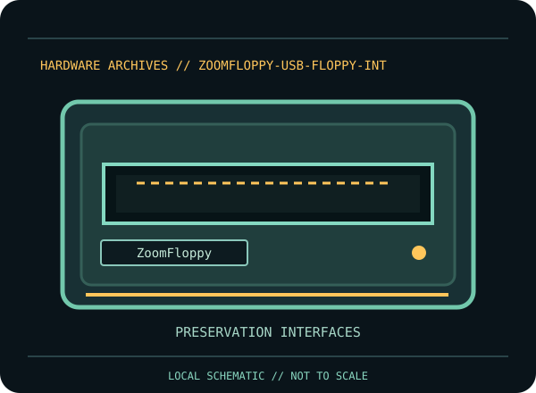

[ INDIVIDUAL COMPONENT // FLOPPY DRIVES ]
ZoomFloppy USB Floppy Interface
This record identifies a documented physical floppy drive, controller, or preservation interface. It separates confirmed model facts from details that vary by suffix, board revision, host, media and configuration.

IDENTIFICATION NOTE: Match the full model/part number, revision, connector and manual before use. Similar family names do not establish interchangeable mechanics or host compatibility.
Model specifications
| Catalog subcategory | Preservation interfaces |
|---|---|
| Exact model / family | ZoomFloppy |
| Era / product family | Go4Retro USB-to-Commodore disk interface |
| Documented characteristics | External USB interface for communicating with supported Commodore serial/parallel-bus disk peripherals. It is an interface/controller device, not a disk drive, disk image, or flux-level capture card; the host software and connected drive determine what operations are available. |
| Interface / connectors | USB host connection on one side and Commodore IEC/IEEE-488 peripheral connections on the drive side. Verify cable and compatible Commodore drive model using Go4Retro documentation; do not confuse IEC and IEEE-488 wiring. |
| Host and media compatibility | Manufacturer documentation positions ZoomFloppy for supported Commodore disk drives and software workflows. It does not turn every drive into a universal PC floppy drive, and it is not a substitute for flux capture where nonstandard track data is required. |
Model-specific compatibility checks
- Identify the complete model/suffix, board revision, serial/date codes and connector arrangement from the physical unit; photograph all labels before installation.
- Manufacturer documentation positions ZoomFloppy for supported Commodore disk drives and software workflows. It does not turn every drive into a universal PC floppy drive, and it is not a substitute for flux capture where nonstandard track data is required.
- Confirm the host controller, drive wiring, power, drive select, termination, media density and recording format against the cited model documentation. Do not infer a fit or capacity solely from the drive size or connector shape.
Preservation and service notes
Use Go4Retro setup instructions and tested cables/software. Disconnect before changing bus wiring; record interface version, firmware/host software and connected drive. Preserve raw device-level dumps and checksums before converting or writing disks, and do not use valuable originals as first-write test media.
Keep original media and raw captures intact. Log the exact drive/controller/software configuration, acquisition date, condition and any service performed; checksum verified copies before creating derivatives.
Manufacturer documentation & sources
- Go4Retro — ZoomFloppy product documentationManufacturer product page for the physical USB interface, supported host peripherals and connection workflow.
Sources are model-specific manufacturer documentation or archival copies of the original source. Where a document covers a family or multiple revisions, confirm its applicability to the exact unit before using an electrical or service specification.